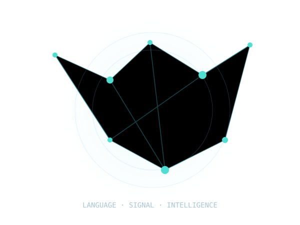

Assistant Professor · Information Systems
Ain Shams University — teaching, research, and applied AI.
I'm Mona Abdelazim. I work across NLP, Arabic language technologies, speech AI, and human-centered applied AI—turning research ideas into practical systems.

I turn research ideas into practical AI systems—with a focus on language and speech technologies, especially for Arabic-speaking communities.
My work spans natural language processing, machine learning, speech recognition and synthesis, conversational AI, and human-centered robotics.
I combine research, technical leadership, teaching, and hands-on experimentation, with interests in AI applications in healthcare and education.
Human-centered conversational AI and intelligent interaction for a humanoid robotic nurse.
View case study ↗Machine-learning and deep-learning approaches for identifying violent and aggressive narratives.
View case study ↗Explorations in speech recognition, speech processing, synthesis, and audio intelligence.
View case study ↗Applied experiments with LLMs, retrieval-augmented systems, and intelligent assistants.
View case study ↗Arabic NLP · multilingual NLP · text understanding · embeddings
ASR · speech processing · TTS · speech intelligence
LLMs · conversational AI · multimodal systems · healthcare AI
Explore my publications and contributions in language technologies.
ACL Anthology profile ↗Ain Shams University — teaching, research, and applied AI.
Technical development across intelligent interaction and language technologies.
Technology education, industry engagement, and student development.
Building academic-industry connections and alumni engagement.
For research collaborations, engineering opportunities, speaking, and AI projects.